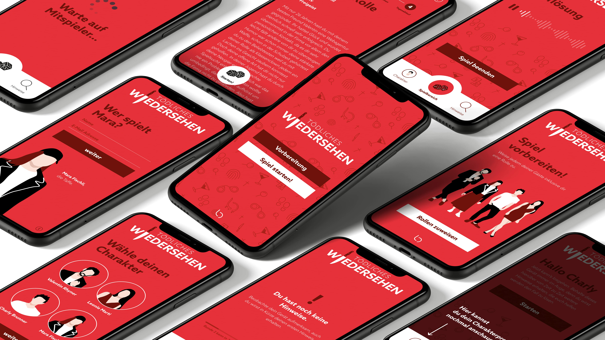
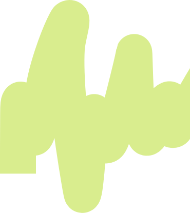
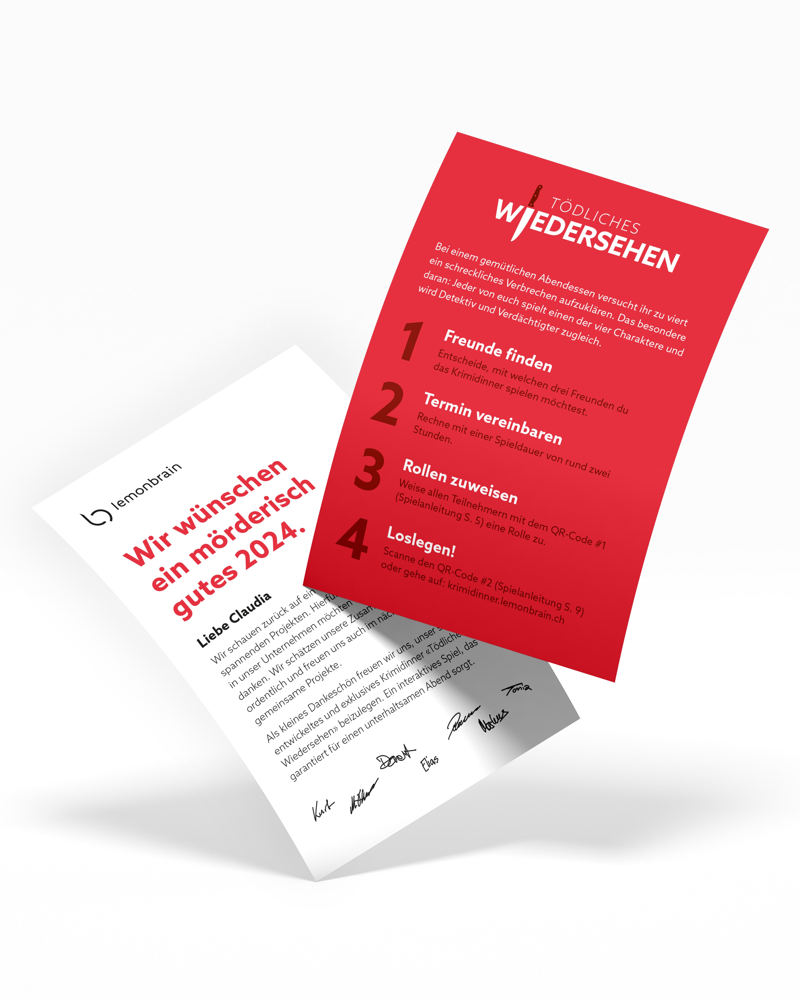
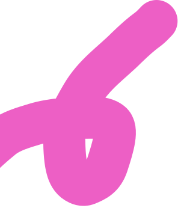
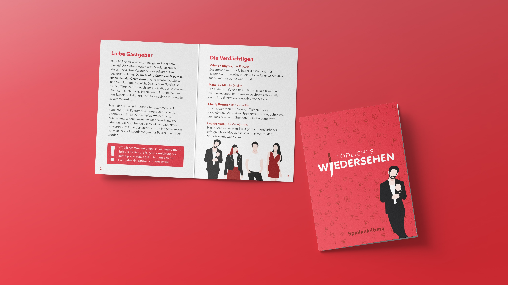

Wie würde dein Arbeitsalltag aussehen, wenn dein Workbestie nicht mehr wäre? Genau hier setzt unsere Social-Recruiting-Kampagne für Repower an. Statt klassischem Employer Branding zeigen wir reale Arbeitssituationen, in denen eine fehlende Person zur Hauptrolle wird. Humorvolle Video-Sketches machen diese Lücke sichtbar und sprechen potenzielle Bewerber:innen direkt und auf Augenhöhe an.
Unter dem Claim «[Name] fehlt noch. Vielleicht bist’s du?» entsteht daraus eine Kampagne, die authentisch, persönlich und aktivierend funktioniert und gleichzeitig das familiäre Arbeitsumfeld von Repower transportiert.



Rund um den Claim «[Name] fehlt noch. Vielleicht bist’s du?» entwickelten wir eine mehrstufige Social-Recruiting-Kampagne. Den Einstieg bilden humorvolle Shortform-Sketches für Instagram, TikTok und YouTube. Von dort führt die Kampagne auf berufsspezifische Landingpages mit einem möglichst einfachen Bewerbungsprozess. Ergänzende Retargeting-Posts rücken konkrete Benefits von Repower in den Fokus und sprechen Personen erneut an, die bereits Interesse gezeigt haben.
Das Projekt entstand als Gruppenarbeit im Major Communications Management an der FH Graubünden. Mein Schwerpunkt lag in der Konzeption sowie als Head of Design in der visuellen und kreativen Ausarbeitung der Kampagne. Da Repower die Kampagne anschliessend selbstständig weiterführen sollte, entwickelten wir nicht nur Prototypen, sondern ein übertragbares Kampagnensystem. Dazu gehörten zwei Video-Prototypen, Retargeting-Content, ein Landingpage-Konzept sowie ein detaillierter Übergabeleitfaden mit Ideen, Captions, Animationen und weiteren Assets für die interne Umsetzung.